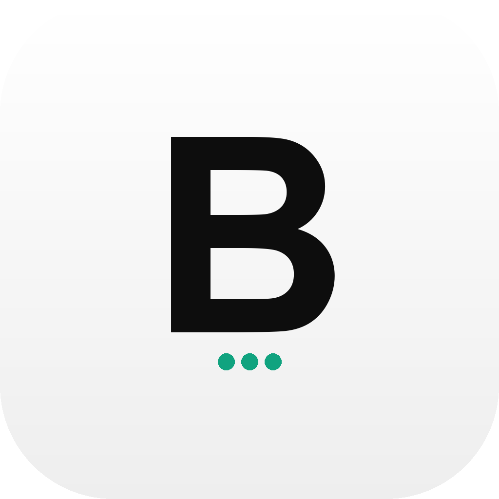
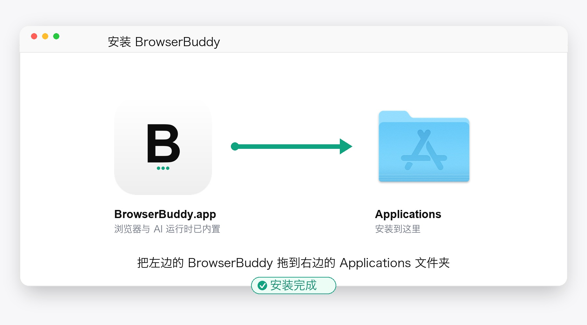
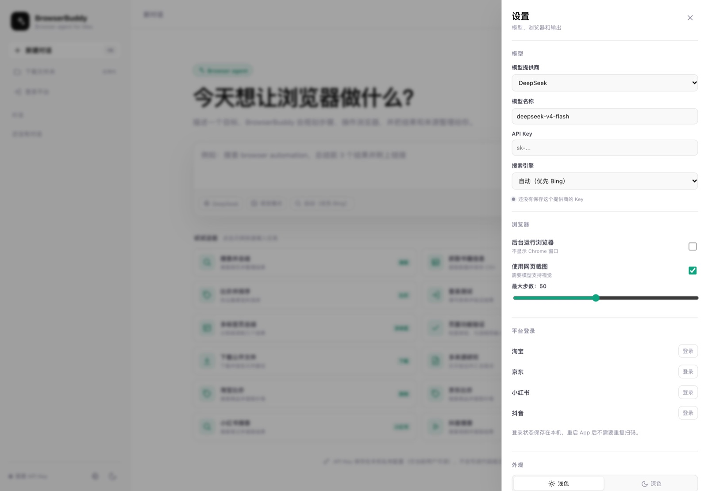
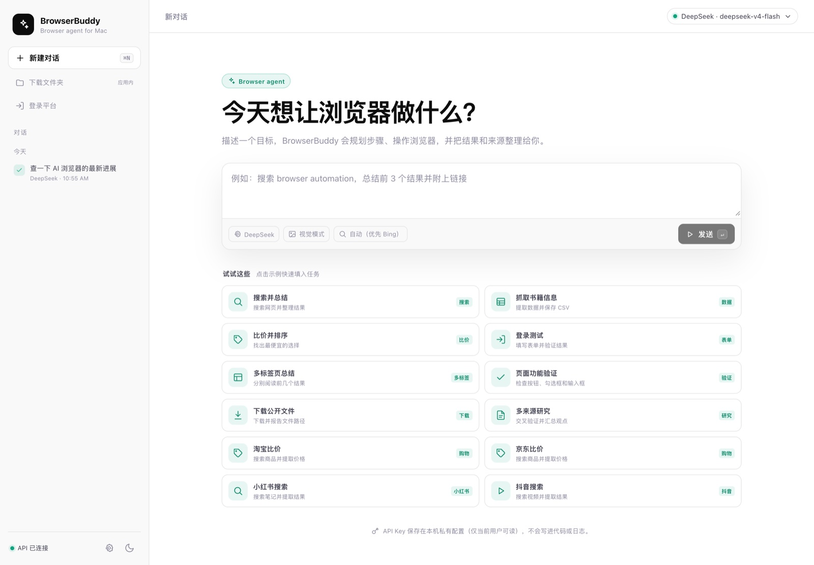
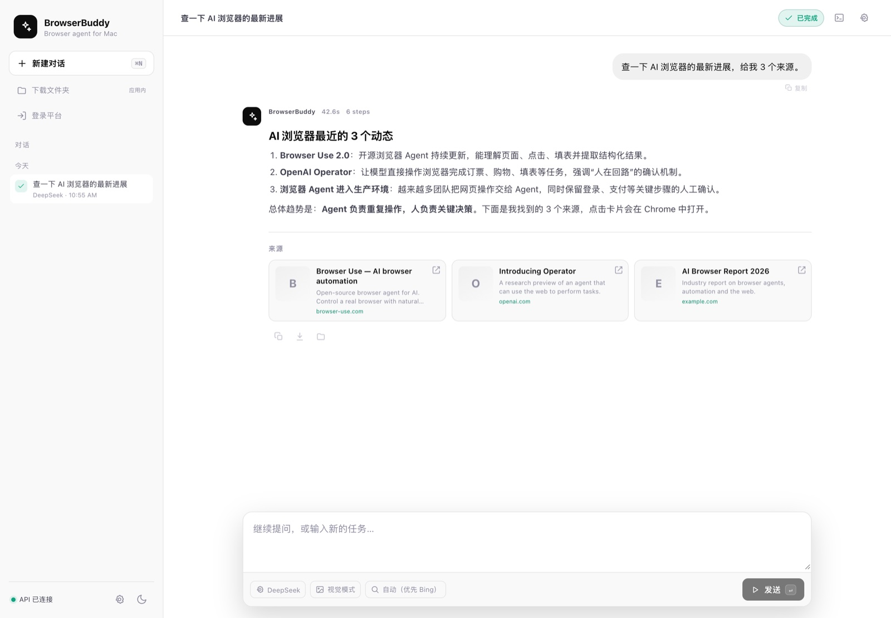
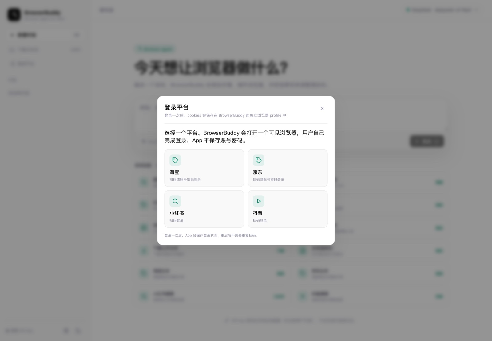
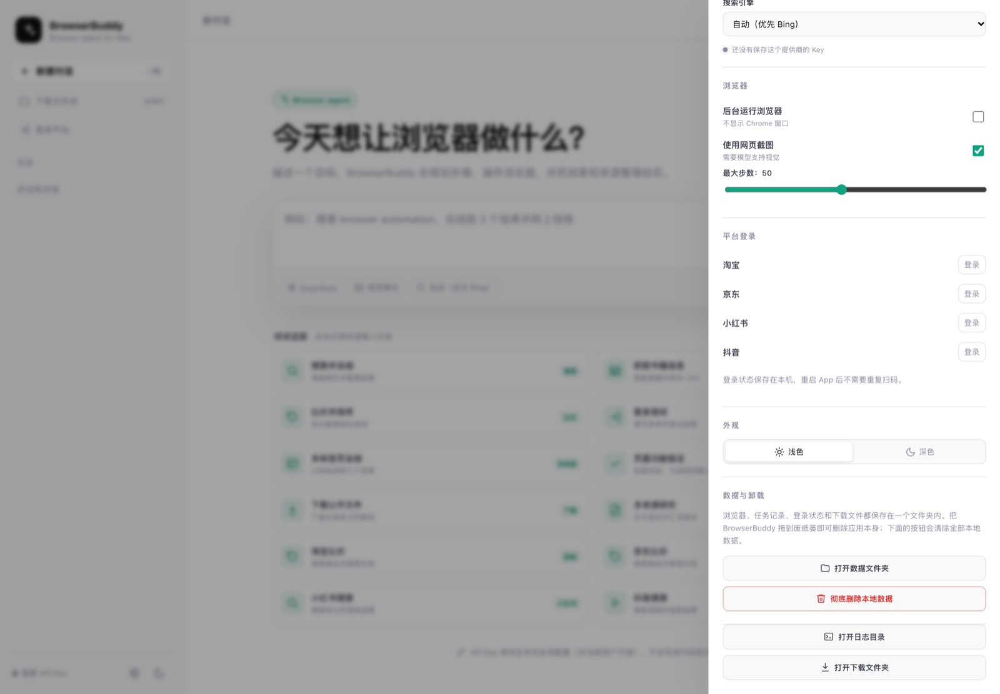

BrowserBuddy 2.0
macOS 安装与使用说明
写给第一次使用 AI 浏览器的你。
不需要安装 Python、Node.js 或 Chrome，拖进 Applications 就能开始。
内置浏览器
无需终端命令
API Key 保存在本机
支持平台扫码登录
版本 2.0.0 · 2026 年 11 月 · 适用于 Apple Silicon Mac
开始之前
先花 1 分钟，了解你会用到什么
BrowserBuddy 是一个“会自己开浏览器”的 AI 助手：你描述目标，它打开一个真实的 Chrome 窗口，点击、输入、翻页，最后把结果和来源整理给你。
你需要准备
- Apple Silicon Mac（M1 / M2 / M3 / M4）
- macOS 12 或更新版本
- 能正常上网
- 一个模型 API Key（推荐 DeepSeek）
你不需要准备
- 不需要安装 Python
- 不需要安装 Node.js
- 不需要单独安装 Chrome
- 不需要使用终端或命令
5 分钟快速开始
1安装 App双击 DMG，把 BrowserBuddy 拖进 Applications。
2第一次打开右键 BrowserBuddy → 打开 → 再点“打开”。
3填写 API Key打开设置 → 选择 DeepSeek → 粘贴 Key → 发送第一个任务，Key 会自动保存。
4说出你的任务例如：“搜索 browser automation，总结前 3 个结果并附上链接。”
5查看结果结果、步骤和来源会整理在对话里；点来源会在 Chrome 中打开。
本说明的截图来自 BrowserBuddy 2.0 的浅色主题。实际界面会因系统版本、模型和网站略有不同，但按钮位置和操作流程是一致的。
第 1 步
安装到 Applications

安装只有一个动作：把左边的 BrowserBuddy 拖到右边的 Applications 文件夹。
1打开 DMG双击下载好的 BrowserBuddy-2.0.dmg，会弹出一个 Finder 窗口。
2拖进 Applications按住 BrowserBuddy 图标，拖到 Applications 文件夹，松手。看到进度条结束即可。
3第一次打开打开 Applications，右键点击 BrowserBuddy → 打开，在弹窗里再点一次“打开”。
为什么第一次要右键打开？
当前版本使用 ad-hoc 签名，还没有做 Apple 开发者公证，所以 macOS 会提示“无法验证开发者”。这不是病毒，也不是安装失败。右键 → 打开一次即可；之后可以直接双击。
如果右键打开后仍然被拦截：
打开“系统设置 → 隐私与安全性”，在页面底部找到 BrowserBuddy，点击“仍要打开”，然后再次打开 App。
不要直接从 DMG 里运行。请先把 App 拖进 Applications 再打开，这样数据、登录状态和更新都会保存在固定位置。
第 2 步
填写模型 API Key

点击左下角齿轮打开设置。第一次使用时，API Key 输入框是空的。
1选择模型提供商推荐 DeepSeek：国内访问稳定，价格低。也可以选 Browser Use、OpenAI、Anthropic 或 Google Gemini。
3粘贴并发送第一个任务把 Key 粘贴到“API Key”输入框，然后直接发送一个任务。Key 会在任务启动时自动保存。
4确认已连接保存成功后，左下角会从“需要 API Key”变成“API 已连接”；设置里会显示“Key 已保存在本机”。
API Key 存在哪里？
保存在本机的 ~/Library/Application Support/BrowserBuddy/secrets.json，文件权限为 0600（只有你自己的账户能读）。Key 不会写进前端页面、日志或代码仓库，只会用于调用你选择的模型服务。
不要把 API Key 发给别人。它相当于你的模型账户密码。如果怀疑泄露，去模型平台删除旧 Key，再创建一个新的。
第 3 步
发出第一个任务

在中间输入框描述目标，点“发送”或按 ⌘Enter。
1把目标说清楚告诉它“去哪里、做什么、要什么结果”。越具体，成功率越高。
2点“发送”App 会打开一个 Chrome 窗口（这是内置浏览器），然后自动开始操作。
3看步骤右侧或对话里会显示 Agent 正在做什么；需要你登录/验证时会暂停并提示。
可以直接复制这些例子
搜索并总结
搜索 browser automation，总结前 3 个结果并附上链接。
小红书
打开小红书搜索“露营装备”，整理前 5 篇笔记的标题和链接。
抖音
去抖音看“加减法”的最新作品，给我标题、发布时间和点赞数。
比价
比较淘宝和京东上某款商品的价格，按到手价排序。
任务运行时不要关闭 Chrome 窗口。Agent 正在这个窗口里操作；关掉它，任务就会中断。任务结束后可以正常关闭。
第 4 步
查看结果和来源

结果会整理成可读文本，来源会显示成卡片。点击卡片会在 Chrome 中打开。
结果区
包含标题、正文、来源和附件。可以复制文本，也可以把结果下载成 Markdown 文件。
来源区
每个来源显示标题、域名和摘要。点击卡片会在 App 内置的 Chrome 中打开详情页。
1点来源卡片详情页在 Chrome 里打开，不会替换 Agent 界面。Chrome 有前进/后退按钮，可以正常浏览。
2关闭 Chrome 不会关闭 App浏览完直接关掉 Chrome 窗口即可，回到 BrowserBuddy 继续提问或新建任务。
3任务运行中先别点如果任务还在运行，点链接会提示“任务运行中”。等任务结束后再点即可。
小红书 / 抖音链接会使用 App 的已登录浏览器打开。如果提示缺少 xsec_token，重新运行任务，让 Agent 返回带完整参数的链接。
第 5 步
登录购物 / 内容平台

侧边栏点“登录平台”，选择淘宝、京东、小红书或抖音。
1选择一个平台App 会打开一个可见的 Chrome 窗口，进入该平台的登录页。
2在 Chrome 里扫码/登录用手机扫码，或按平台提示完成登录。不要在 BrowserBuddy 的聊天框里输入密码。
3登录成功后自动关闭App 检测到新的登录 Cookie 后会自动关闭登录窗口，并把状态更新为“已登录”。
任务中遇到登录墙怎么办？
任务会自动暂停，弹出“登录抖音 / 登录小红书”提示。你完成扫码后它会自动继续，不需要手点“继续任务”。如果扫码失败，可以直接取消任务。
不需要反复登录。登录状态保存在本机，重启 App 后仍然有效。平台会话过期时，App 会把状态改回“未登录”，并再次暂停让你扫码，不会假装已登录。
安全提示：App 不保存平台账号密码；付款、验证码、短信确认始终由你本人操作。
第 6 步
数据、隐私与卸载

设置 → 平台登录 / 数据与卸载，可以查看状态、打开数据文件夹或彻底删除本地数据。
| 数据总目录 | ~/Library/Application Support/BrowserBuddy |
| API Key | secrets.json（0600，仅本机） |
| 浏览器配置 | 独立 profile，与你的日常 Chrome 完全隔离 |
| 下载文件 | downloads，不会动系统“下载”文件夹 |
| 日志 | logs，排查问题时可打开 |
卸载 / 清除数据
1退出 App按 ⌘Q，或菜单栏退出。App 会关闭自己启动的浏览器。
2拖到废纸篓打开 Applications，把 BrowserBuddy 拖进废纸篓。应用本体就删除了。
3清除本地数据（可选）删除前打开 设置 → 数据与卸载 → “彻底删除本地数据”；或在访达中删除整个 Application Support/BrowserBuddy 文件夹。
关于你原来的 Chrome：App 使用内置 Chromium 和独立 profile，不会读取或修改你日常 Chrome 的书签、密码、Cookie 和插件。
常见问题
遇到问题时先看这里
1. 打开时提示“无法验证开发者”？右键 App → 打开 → 再点“打开”。如果仍被拦截，去“系统设置 → 隐私与安全性”点“仍要打开”。这是未公证版本的正常现象。
2. 提示“需要 API Key”或任务没反应？打开设置，确认提供商和 Key 填写正确；Key 通常以 sk- 开头，前后不要有空格。填好后先发送一个简单任务，Key 才会保存。
3. 需要自己安装 Chrome / Python 吗？不需要。App 已内置 Chromium 和 Python 运行时。直接拖进 Applications 就能用。
4. 弹出的 Google Chrome for Testing 是什么？这是 App 内置的浏览器，不是你的日常 Chrome。任务执行、登录和来源展示都用它；它的窗口有正常的前进/后退。
5. 点来源没反应，提示“任务运行中”？Agent 和来源浏览器共用同一个 profile。等任务结束后再点，或者先停止任务。
6. 平台显示已登录，任务却要求扫码？说明平台会话已过期。App 会自动把状态改成“未登录”并暂停，扫码成功后会恢复“已登录”。
7. Intel Mac 能用吗？当前 2.0 包只支持 Apple Silicon（M 系列）和 macOS 12+。Intel Mac 需要单独构建的 x86_64 版本。
8. 下载的文件在哪里？在 App 数据目录的 downloads 文件夹。侧边栏“下载文件夹”或 设置 → 打开下载文件夹 可以直接打开。
9. 任务很慢或失败？网站反爬、网络波动、页面改版都可能导致失败。先停止任务重试；把任务拆小、说清楚目标，成功率会更高。
反馈问题时，附上：任务原文、出错截图、设置里的提供商/模型，以及 设置 → 打开日志目录 中的日志。不要发送 API Key。
安全与版本
让 AI 帮你操作，但关键决定留给自己
建议这样做
- 重要价格、订单、地址，提交前自己确认
- 付款、验证码、短信确认始终自己操作
- 给 Agent 的任务尽量具体、可验证
- 只在自己有权操作的网站和账号上使用
不要这样做
- 不要在聊天框里输入平台密码
- 不要把 API Key 发给别人或写进公开页面
- 不要用 Agent 绕过网站的安全验证
- 不要让它代替你确认支付或签署协议
版本信息
| App 版本 | BrowserBuddy 2.0.0 |
| 系统要求 | macOS 12+ / Apple Silicon（arm64） |
| 浏览器 | 内置 Chromium（Google Chrome for Testing） |
| 运行时 | 内置 CPython 3.11，无需用户安装 |
| 签名 | ad-hoc 签名，未公证；首次需右键打开 |
| 安装包 | BrowserBuddy-2.0.dmg（约 227 MB） |
AI 会犯错。BrowserBuddy 会尽量核对页面内容，但模型仍可能看错、漏看或做出错误判断。涉及金钱、账号、隐私和法律的决策，请务必人工复核。
把这份说明和 DMG 一起发给朋友：先看“5 分钟快速开始”，遇到问题再看 FAQ。大多数安装和使用问题都能在前 3 页找到答案。
BrowserBuddy 2.0 · 用户安装与使用说明 · 2026 年 11 月